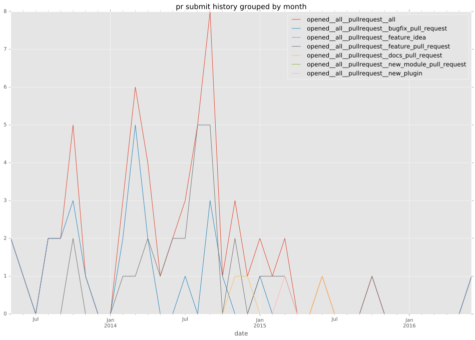
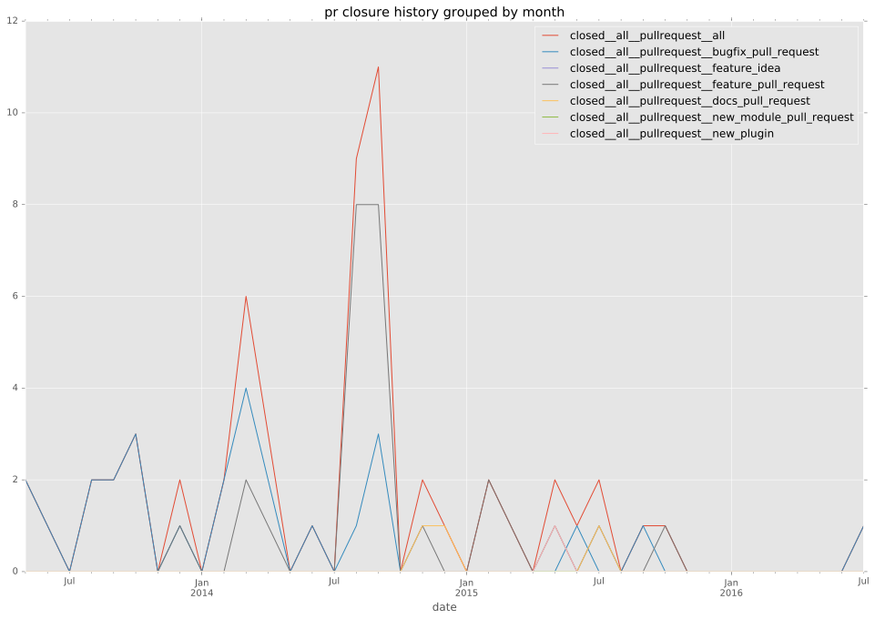

total issue counts
feature pull request: 31
pullrequest: 62
docs pull request: 2
bugfix pull request: 28
feature idea: 2
issue: 5
new plugin: 1
bug report: 3
issue history
pullrequest history


days open by issue type
bugfix pull request
count: 47
std: 29.906236452
min: 0
max: 174
median: 0.0
mean: 10.4468085106
all
count: 93
std: 54.8519576716
min: 0
max: 247
median: 3.0
mean: 32.376344086
pullrequest
count: 0
std: nan
min: nan
max: nan
median: nan
mean: nan
docs pull request
count: 4
std: 1.15470053838
min: 0
max: 2
median: 1.0
mean: 1.0
feature pull request
count: 35
std: 70.0666909199
min: 3
max: 247
median: 28.0
mean: 63.8
feature idea
count: 2
std: 22.627416998
min: 48
max: 80
median: 64.0
mean: 64.0
issue
count: 0
std: nan
min: nan
max: nan
median: nan
mean: nan
new plugin
count: 2
std: 0.0
min: 33
max: 33
median: 33.0
mean: 33.0
bug report
count: 3
std: 50.5206228518
min: 0
max: 88
median: 1.0
mean: 29.6666666667
closures grouped by total days open